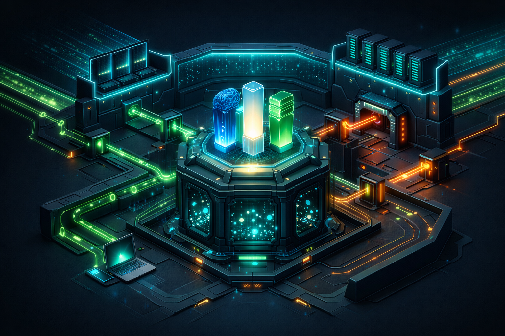

Maîtrise
SophIA donne aux organisations un cadre pour contrôler l’accès de l’IA à la connaissance, aux outils et aux informations externes, au lieu de laisser se développer des usages opaques et improvisés.
Une architecture souveraine pour des systèmes d’IA sécurisés, auditables et exploitables.
SophIA s’adresse aux organisations qui veulent aller au-delà des démos et des assistants isolés. Le système structure la mémoire, les outils, l’accès à la connaissance et les environnements d’exécution afin de rendre l’IA gouvernable, sécurisée et exploitable avec une vraie discipline opérationnelle.
SophIA est actuellement développée comme une approche architecturale en cours de structuration, et non comme un produit fini.
La difficulté n’est pas d’avoir accès à l’IA. La difficulté est de l’utiliser sans perdre en gouvernance, en sécurité et en cohérence. Les connaissances sont dispersées, les données sensibles peuvent fuiter, les outils restent mal intégrés et les POC prometteurs ne se transforment pas en systèmes réellement exploitables.
SophIA donne aux organisations un cadre pour contrôler l’accès de l’IA à la connaissance, aux outils et aux informations externes, au lieu de laisser se développer des usages opaques et improvisés.
Le système est conçu pour réduire les risques grâce à l’isolation, à la validation, au filtrage et à une gestion explicite du contexte, afin que les résultats de l’IA puissent être gouvernés.
SophIA n’est pas une simple interface de chat. C’est une approche plateforme pour passer de l’expérimentation à des assistants internes, des automatisations encadrées et des services IA réellement exploitables.
SophIA est pensée pour des cas d’usage concrets où la gouvernance, la sécurité et le contrôle opérationnel comptent autant que la puissance des modèles.
Déployer des assistants connectés à la connaissance, aux processus et aux outils internes sans exposer l’organisation à des flux de données non maîtrisés.
Construire des systèmes de recherche augmentée sur la documentation, les procédures et les savoirs internes avec une ingestion et une validation contrôlées.
Structurer des workflows agentiques ou semi-automatisés avec des limites explicites, une exécution isolée et un comportement auditable.
Outiller les équipes support, opérations ou produit avec des assistants contextuels capables de raisonner sur des sources internes de confiance.
Créer une plateforme IA dédiée pour les organisations qui ne peuvent pas dépendre uniquement de SaaS publics pour des raisons de confidentialité, de conformité ou de souveraineté.
Donner de la liberté aux équipes d’innovation tout en fournissant à la direction des garde-fous d’architecture, de gouvernance et de sécurité dès le départ.
SophIA suit une architecture de plateforme conçue pour répondre à un besoin simple : utiliser l’IA avec plus de capacité qu’un simple chatbot, mais avec plus de contrôle qu’un assistant SaaS générique.
Users / IDE / API
│
▼
WireGuard Access
│
▼
+----------------------------+
| SophIA-core |
| Orchestrator / LiteLLM |
+-------------+--------------+
│
┌──────────┼───────────┬──────────────┬──────────────┐
▼ ▼ ▼ ▼ ▼
SophIA- SophIA- SophIA- SophIA- SophIA-
inference memory skills dmz sandbox
models Qdrant MCP tools web intake workspaces
│ │
▼ ▼
knowledge semantic validation
│ │
└──────────────┬──────────┘
▼
persistent memory

La base actuelle repose sur une pile open source pragmatique, choisie pour sa reproductibilité, sa maîtrise et sa compatibilité avec des environnements contrôlés.
SophIA est en cours de développement actif en tant que cadre architectural. Les fondations, les concepts et les principes de conception sont déjà définis et validés, tandis que le système est progressivement enrichi et consolidé.
SophIA est initiée par Damien Guesdon comme une réponse à une question très concrète : comment permettre aux organisations de tirer parti de l’IA sans perdre le contrôle de leurs systèmes, de leurs données et de leur modèle opérationnel ?
Le projet combine plus de 20 ans d’expérience en infrastructure, réseau, systèmes critiques et direction technique avec une spécialisation actuelle en ingénierie IA, conception de plateformes et architecture souveraine.
Pour les décideurs, SophIA illustre une approche concrète de l’IA d’entreprise gouvernée. Pour les recruteurs, le projet reflète un profil capable de relier stratégie, architecture, sécurité, exécution et vision plateforme.
SophIA n’est pas présentée comme un produit fini, mais comme une approche architecturale concrète pour les organisations qui souhaitent passer de l’expérimentation IA à des systèmes maîtrisés et industrialisables.
SophIA — Assistant suprême ? est le livre de Damien Guesdon sur la nature réelle de l’intelligence artificielle, les limites des grands modèles de langage et les principes d’ingénierie nécessaires pour construire des systèmes d’IA souverains.
Actuellement disponible uniquement en français.
Il aborde les hallucinations, le model collapse, les fuites de données, les prompt injections, l’orchestration, le RAG, l’exécution sécurisée, le Zero Trust et la vision architecturale qui a conduit à SophIA.